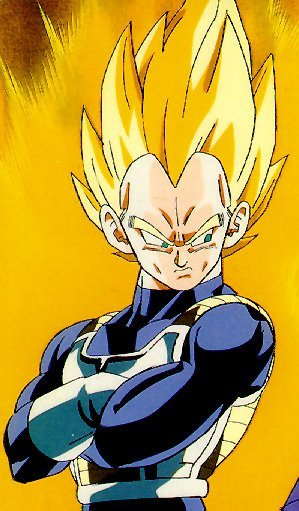

"The Super Saiyan form first premiered in August 1991, within chapter 317 of the Dragon Ball manga, entitled "Life or Death". It also made its anime debut in 1991, first appearing in Dragon Ball Z episode 95, "Transformed at Last". Within Dragon Ball Z, two further transformations, the second[11] and third[12] levels, succeed Super Saiyan, while the premier form also has three additional branch states, two that are ascensions[13] and one that is a mastering[14] of the basic Super Saiyan form. Dragon Ball GT introduced a fourth[15] form, and there are three additional forms related to the Super Saiyan state that appear exclusively in the Dragon Ball Z films: False Super Saiyan,[16] Legendary Super Saiyan,[17] and Super Saiyan God..." - Taken from http://dragonball.wikia.com/wiki/Super_Saiyan
Vegeta
Vegeta Super Sayian I
Super Sayians are cool
"Vegeta (ベジータ), or Prince Vegeta, is the prince of the fallen Saiyan race and arch-rival to Goku. He is the eldest son of King Vegeta, the older brother of Tarble, the husband of Bulma, the father of Trunks and Bulla, and the great-great grandfather of Vegeta Jr. Alongside Goku, Gohan, and Piccolo, he is easily one of the most prominent characters in the series, receiving more character development after being introduced than a number of other characters...". -taken from http://dragonball.wikia.com/wiki/Vegeta
